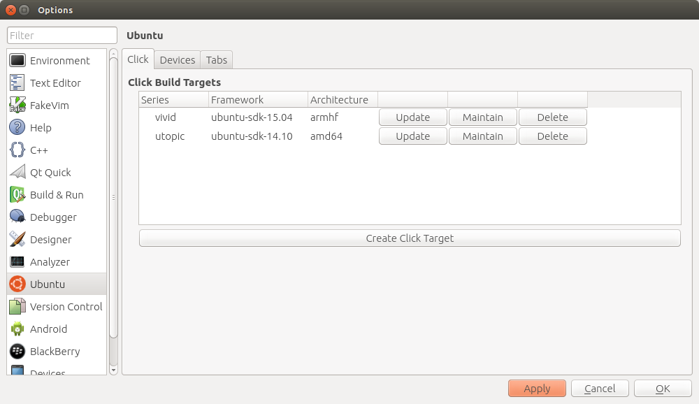
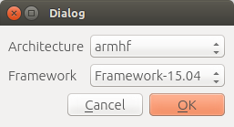
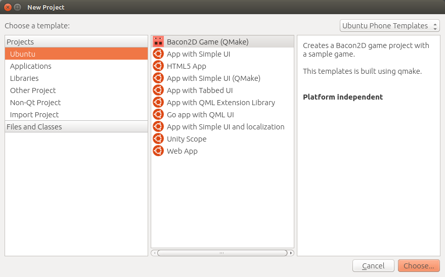
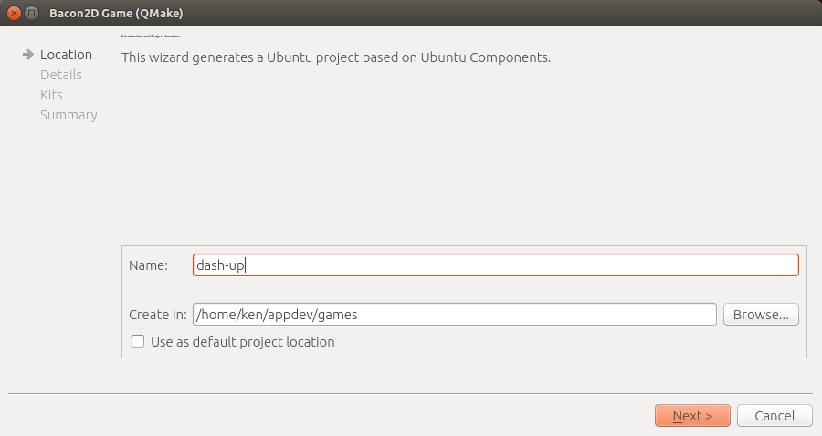
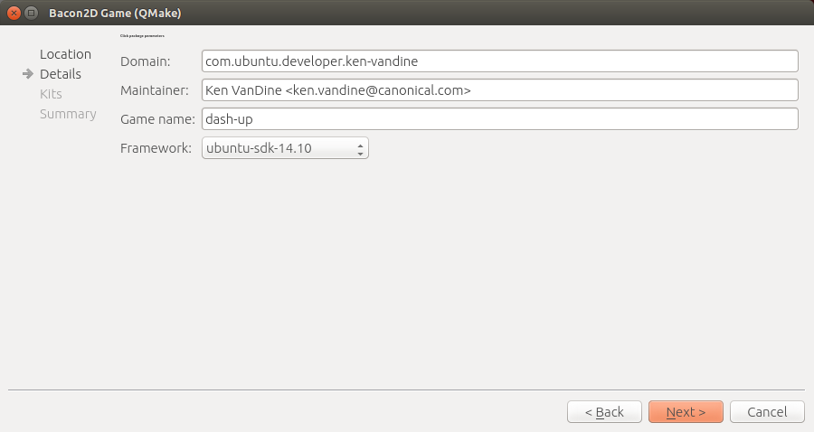
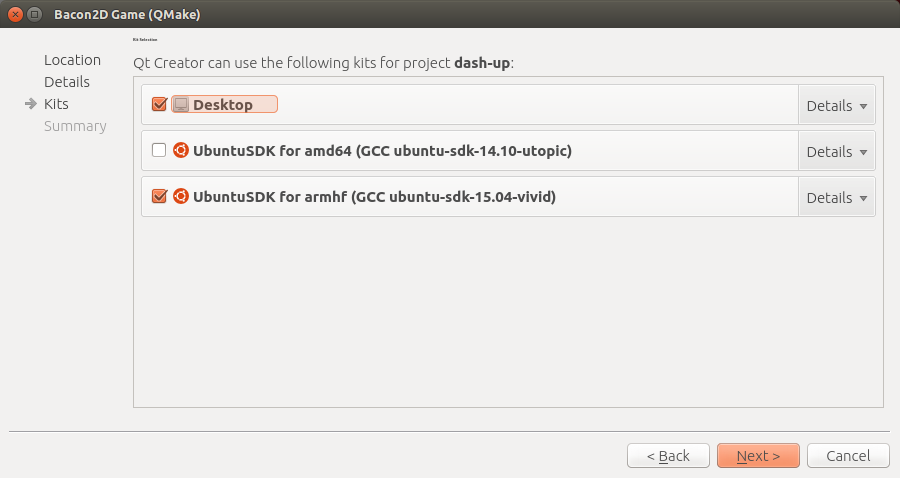
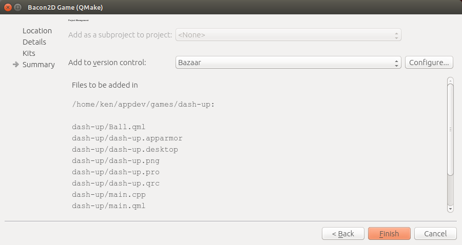

To get started on your own game, you'll need to setup your development environment. You'll need Ubuntu 14.04 or later and the Ubuntu SDK, which will give you QtCreator, some QML components and necessary packages to build click packages for Ubuntu Touch. And finally, Bacon2D from the Bacon2D Release PPA.
Ensure you have the proper version of the Ubuntu SDK installed - Install the Ubuntu SDK
Install the Bacon2D game template:
sudo add-apt-repository ppa:bacon2d-team/ppa sudo apt-get update && sudo apt-get install qtcreator-template-bacon2d
Launch the Ubuntu SDK (QtCreator) and open the options dialog by clicking on Tools and then Options in the menu.

Select "Ubuntu" from the left and the "Click" tab. If you do not have a click target from 15.04, create a new one with "Create Click Target". To build your game for an Ubuntu device, choose "armhf" for the architecture and the 15.04 framework.

After the kit is created, you will need to add the Bacon2D QML plugin manually. Find the click target you just created in the list and click "Maintain". This will open a terminal in the target chroot. To install the plugin, run the following command in the terminal:
apt-get install qtdeclarative5-bacon2d1.0:armhf && exit
This will close the terminal, now your kit is ready to build Bacon2D games!
Lets create a new Bacon2D game project.





Once the new project is created, you'll notice the template provided a simple example to build on.
Now that you have a skeleton for your first Bacon2D game, have some fun!
For complete API documentation, please visit http://bacon2d.com/docs